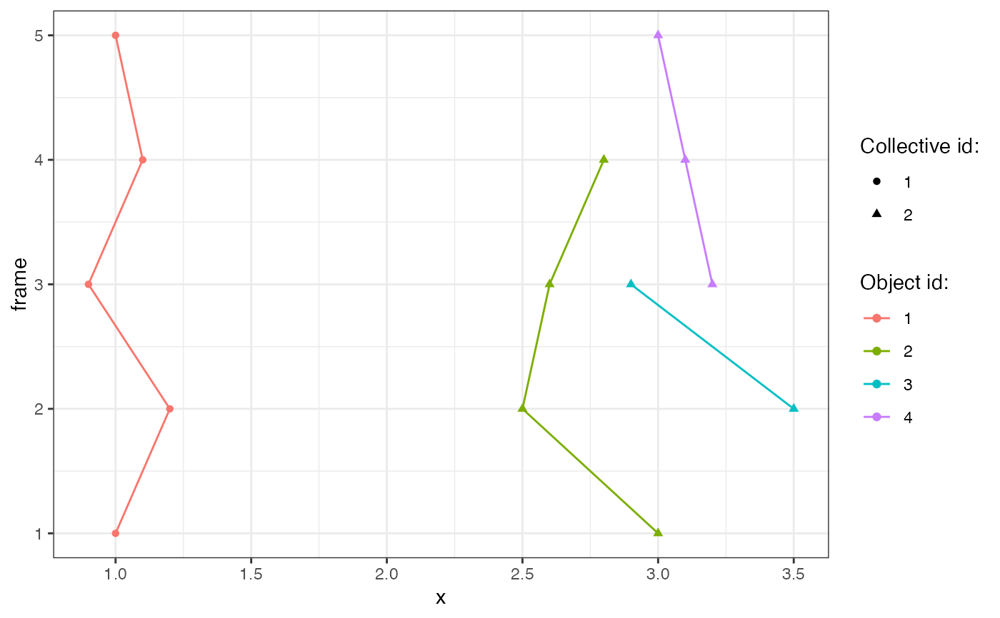

Track spatial clusters of objects between frames of a time series. Positions of objects should be supplied in a long-format data.table with at least 3 columns: frame number, position (1, 2, or 3 columns), and the object id. The frame number should be an integer, the object ID may be a string or an integer, and the object position has to be numeric (an integer or a float).
a data.table with time series in the long format with at least 3 columns: integer frame number, object id, object position.
a float with the search radius for spatial clustering with dbscan, default 1.
an integer with the minimum size of the spatial cluster in dbscan, default 1L.
an integer with the number of previous frames to search for an event, default 1L.
a float with the search radius for linking clusters between frames, default NULL means that epsPrev = eps.
a list with column names, list(frame = , id = , clid = ), that correspond to the integer frame number, object id and id of collective events, respectively.
a vector with names of position columns, default c("x").
logical, whether to output debug information.
a data.table with cluster numbers and id's of the corresponding objects
Thanks to long format, every frame contains at least one object, however, frames do not need to be consecutive.
Objects are searched at least one frame back. Adjust the length of the search history with nPrev.
The algorithm first spatially clusters objects independently in every frame,
then propagates cluster numbers to clusters in consecutive frames, if at least one objects is within a threshold distance.
Spatial clustering is performed using dbscan::dbscan and the nearest-neighbour (NN) distance is calculated with the RANN::nn2 function.
The algorithm proceeds as follows:
spatially cluster objects independently in every frame; the resulting cluster IDs are unique for the entire time sequence
**for** every frame i
search for objects in nPrev frames
**for** every cluster in the current frame k
calculate the NN distance between objects in cluster k and all objects from all clusters in nPrev frame(s)
**if** the NN distance is below the threshold
change the cluster ID of all objects in cluster k to that of the closest object in nPrev frame(s)
**end for** every cluster
**end for** every frame
library(ARCOS)
library(data.table)
library(ggplot2)
dt = data.table(frame = c(1, 1, 2, 2, 2, 3, 3, 3, 3, 4, 4, 4, 5, 5),
id = c(1, 2, 1, 2, 3, 1, 2, 3, 4, 1, 2, 4, 1, 4),
x = c(1, 3, 1.2, 2.5, 3.5, 0.9, 2.6, 2.9, 3.2, 1.1, 2.8, 3.1, 1, 3))
dtColl = ARCOS:::trackCollEvents(dt,
eps = 0.6,
minClSz = 1L,
nPrev = 1L,
cols = list(frame = "frame",
id = "id",
clid = "collId"),
posCols = c("x"),
deb = FALSE)
dt = merge(dt, dtColl, by = c("frame", "id"))
ggplot(dt,
aes(x=x,
y = frame,
color = factor(id),
group = id)) +
geom_path() +
geom_point(aes(shape = as.factor(collId))) +
scale_shape_discrete("Collective id:") +
scale_color_discrete(name = "Object id:") +
theme_bw()
